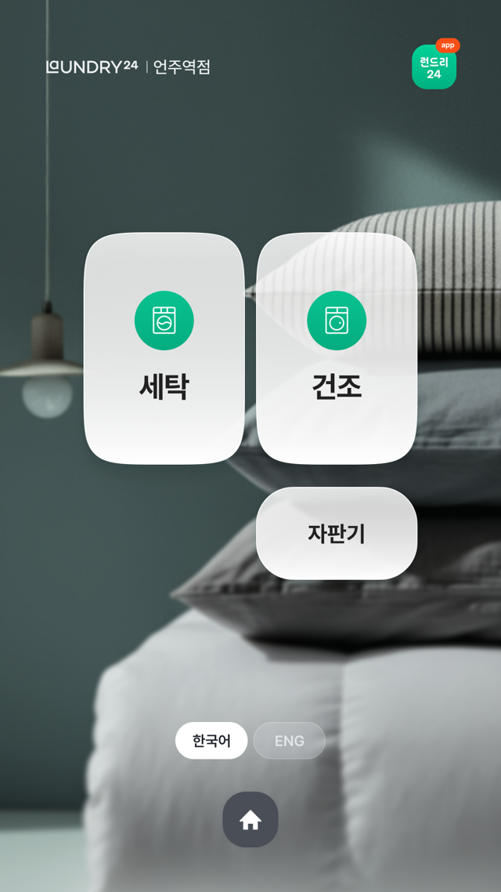

주요 업데이트 성과 요약
| 구분 | 기존 v1.0 | 개선 v2.0 |
|---|---|---|
| 실시간 기기연동 | 결제만 가능 | 결제, 코스선택, 진행상황 노티 등 |
| 알림 정확도 | 평균 10분 이상 시간 오차 | 오차 1분 미만 실시간 안내 |
| 셀프기기 운영 | 입고 중 이용 불가 | 입고 중 상시 이용 가능 |
| 고객 가이드 | 부족한 안내로 인한 이탈 | 단계별 유저액션 유도 가이드 |
| 장애 대응 (심야) | 대응 불가 | 고객주도 장애해결 |
Seamless Connection
1. 실시간 기기 연동
LG API 연동으로 키오스크 결제 정보가 즉시 전송됩니다. 이제 고객은 기기에서 코스를 다시 고를 필요 없이 "시작" 버튼만 누르면 세탁이 시작됩니다.


Precision Timing
2. 획기적인 알림 정확도
가장 중요한 "남은 시간 알림" 기능이 고도화되었습니다. 기존 10분 이상 발생하던 오차를 1분 미만으로 줄여 고객에게 정확한 세탁 종료 안내를 제공합니다.
Non-stop Service
3. 중단 없는 매장 이용
물류 입고 작업과 고객 서비스를 분리하여 매장 운영 효율을 극대화했습니다.
- • 입고 진행 중에도 대기 없이 셀프 기기 이용 가능
- • 물류기사 업무 시간 단축 및 고객 편의성 동시 확보


Smart UX
4. 직관적인 유저액션 유도
복잡한 드라이클리닝 접수 과정도 누구나 쉽게 마칠 수 있습니다. 단계별 맞춤 UI를 통해 이탈률을 낮추고 접수 누락 오류를 원천 차단합니다.
Self Recovery
5. 고객 주도 장애 대응
심야 등 관리 부재 시에도 서비스가 중단되지 않습니다. 기기 오류 발생 시 고객이 직접 키오스크에서 '자체 초기화'를 진행하여 즉시 문제를 해결할 수 있습니다.